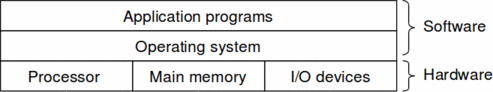
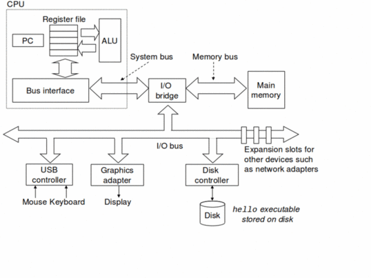
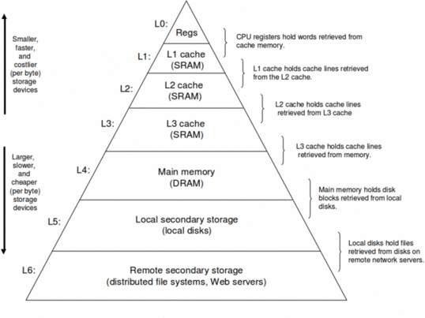
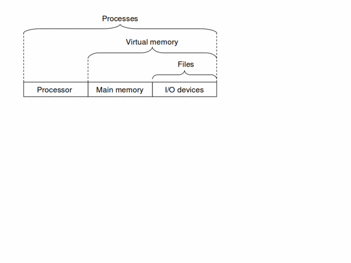
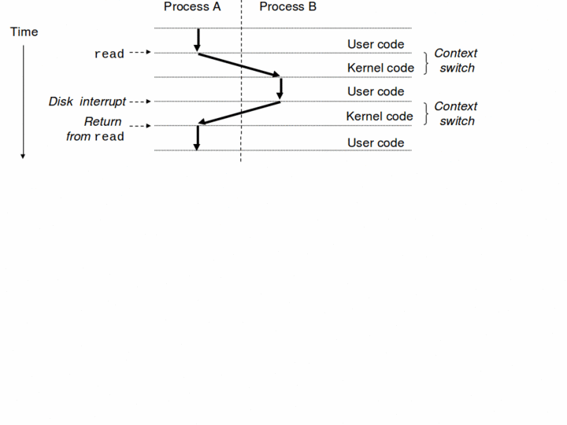
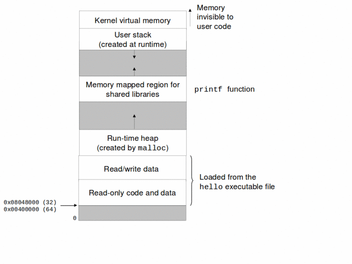
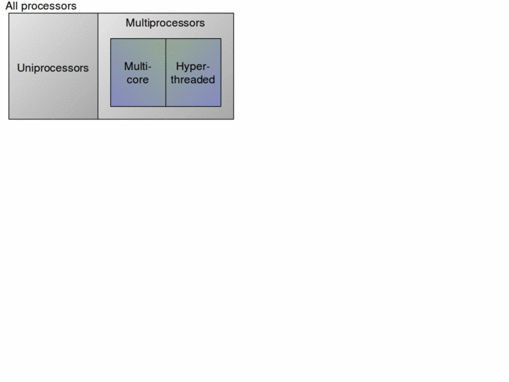
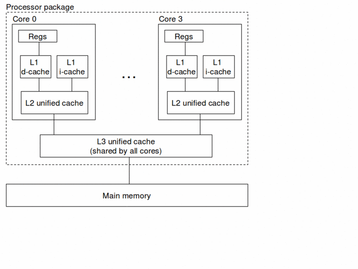
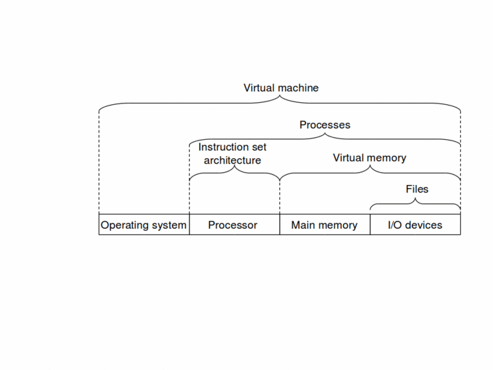

Introduction
Layers of a Modern Computer System
A computer system is organized in layers with each layer usually interacting only with the layer immediately below it.
Layers of a Modern Computer System Continued
In more detail, top-to-bottom layers are the following:
- Application
The application which is seen by the end-user of the computer system. Examples: word, excel, emacs, gcc. Most general-purpose computers are capable of running many different applications simultaneously.
- System-independent programming language
Most applications are implemented in high-level programming languages like C or Java which are independent of the actual computer system on which the application will run. Different programming languages can themselves be classified as very high level (Prolog, Haskell), high-level (Java, Perl, Python) or low-level (exemplified by C).
Layers of a Modern Computer System Continued
- Assembly Language
Mnemonic form of the instructions executed by a specific computer architecture. Under Unix, programs in system-independent programming languages are usually translated to assembly language by a program called a compiler.
- Machine Language
The numeric encoding of the instructions executed by a specific computer architecture. Assembly language programs are translated to machine language programs using a program called a assembler.
Layers of a Modern Computer System Continued
- Operating System
Access by programs to all computer resources (including CPU, memory, I/O devices) is usually mediated by an OS program like Unix or Windows. Operating systems are often implemented in C or C++.
- Computer System Architecture
This includes the instruction-set architecture seen by assembly language programs as well as details of the computer system CPU(s), memory system, I/O devices, system buses, networks seen by the OS.
- Micro-Architecture
Different implementations of a computer system architecture use different micro-architectures. For example, the basic x86 architecture was implemented differently by the 80386, 80486, Pentium, P6, Pentium 4, etc.
Abstractions
Computer system design is the design of abstractions:
- Abstraction
Any generalization technique that ignores or hides details to capture some kind of commonality between different instances for the purpose of controlling the intellectual complexity of engineered systems, particularly software systems.
For example, the layers within a computer systems constitute a set of successively less abstract views of the system. So for example, an application programmer needs only to understand the details of the system-independent programming language used and largely ignore details of the computer system on which the application will run.
Leaky Abstractions
Unfortunately, many abstractions are leaky.
The choice of column-wise versus row-wise initialization of a matrix can have drastically different performance implications depending on the matrix layout and memory hierarchy implementation.
SQL allows accessing a database using an abstract query language but two logically equivalent SQL queries can have drastically different performance depending on the database implementation.
Remote file systems allow accessing a remote file just like a local file but if a email .forward file is on a remote file system which is down, then email will not be forwarded.
This is why it is necessary for any competent application programmer to understand the material which will be covered in this course.
A Simple C Program
In hello.c:
#include <stdio.h> int main() { printf("hello world\n"); return 0; }
Compilation
$ gcc -o hello hello.c
Compilation proceeds conceptually as follows:
Preprocess .c file (expanding macros, performing file inclusions, etc) to hello.i file. The stdio.h header file contains a declaration for the printf() function.
Compile pre-processed hello.i file to assembly language hello.s file.
Assemble assembly language hello.s file to hello.o object file.
Link hello.o file with system libraries (which contain definition of printf() function) to hello executable.
Running the Program
Using a command-line shell:
$ ./hello hello world $
Computer Hardware Organization
Component Speeds
Assuming 1 GHz clock:
| Component | Access Speed | Human Scale |
|---|---|---|
| Register | 1 nanosec | 1 second |
| Memory | 100 nanosec | 100 seconds |
| Disk | 10 millisec | 116 days |
| Keyboard | 500 millisec | 16 years |
Cache
Registers are a couple of orders of magnitude faster than main memory, but much more expensive.
Multi-level caches use locality-of-reference to access memory with speed close to that of the cache technology but with cost close to that of main memory.
Memory Hierarchy
Idea of caching can be extended to disks too:
Main memory a cache for local disk.
Memory-management hardware allows automated mapping of virtual memory to physical memory and disk.
Local disk a cache for remote disk.
Memory Hierarchy Pyramid
Visibility of Components to Application Programming Languages
Assembly language makes registers and (virtual) memory visible.
Low-level languages like C make (virtual) memory visible.
High-level languages like Java, Perl do not make any components visible.
All language levels hide disk and I/O behind some kind of file abstraction provided by the OS.
Memory Addressing
Modern computers represent memory as a sequence of 8-bit bytes with each byte individually addressable by a address.
Memory addresses are usually specified in hexadecimal and range from 0x00000000 to 0xffffffff (i.e. 8 f's) for 32-bit machines and from 0x0000000000000000 to 0xffffffffffffffff (i.e. 16 f's) for 64-bit machines.
Typically, memory bytes are grouped into 4 or 8-byte words.
Memory Addresses
Addressing of memory for a 32-bit machine:
+------+------+------+------+
0xfffffffc | | | | |
+------+------+------+------+
0xfffffff8 | | | | |
+------+------+------+------+
0xfffffff4 | | | | |
+------+------+------+------+
: :
: :
+------+------+------+------+
0x00000008 | | | | |
+------+------+------+------+
0x00000004 | | | | |
+------+------+------+------+
0x00000000 | | | | |
+------+------+------+------+
OS Abstraction
Operating system mediates access to physical computer resources.
Process Switching
A single CPU can run multiple processes concurrently using process switching. Because of high switching speed, it appears that the processes are running simultaneously.
Process Virtual Address Space
Typically, memory management hardware gives each process the illusion of a separate dedicated virtual memory. The virtual memory of a process is typically organized as shown below:
Multiple Processors
With multiple processors, each processor can run processes simultaneously.
Multi Core Architecture
Have multiple cores on a single chip where the cores share memory and I/O.
Virtual Machine Abstraction
Introduced by IBM, a VM provides an abstraction of a complete computer system:
Input / Output
Only way for a computer to exchange information with its environment is via I/O.
Typically, two I/O models:
- Polling
CPU repeately polls a I/O device to see when input data is available or whether the device can accept output data.
- Interrupts
The I/O device interrupts the CPU when it is ready to perform I/O. The CPU saves the context of its current task and runs a special interrupt-service routine to handle the I/O device's request and then restores and resumes the interrupted task.
Polling is used currently only by very simply microcontrollers; most high-performance modern computers use interrupts.
References
Text, Ch. 1.
More details on the compilation process available at Compilation Details.